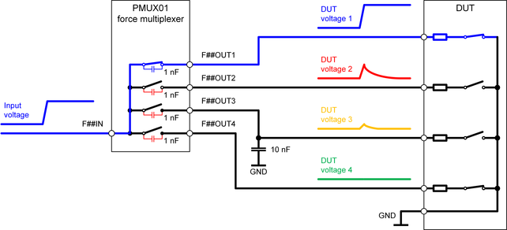

MUX cards layout recommendations
To get the best performance from MUX cards, follow the recommendations for designing the DUT board and setting up the test.
Minimizing the effect of capacitive coupling
The PMU01 card utilizes only solid-state switches. In open state, these switches are naturally afflicted by parasitic capacitances between the input and output. For more information, refer to the "Coupling capacity (IN-OUT)" values of the PMUX01 specification.
The parasitic capacitances could be to blame for the fact that signals with high frequency components (like a voltage step) are partially transmitted via an open switch. Although the energy transferred via the parasitic capacitances is very low and normally available ESD protection diodes of the DUT pins can handle much more energy, it may affect your test or, in some cases, exceed the limits of a connected DUT pin.
- A signal with a high voltage slew-rate is routed from the multiplexer input to one of the outputs or vice versa. The other outputs are open. High impedance resources or DUT pins at the open outputs can "see" capacitive coupled edges of the closed connection.
- All switches are open and the input is connected to a high impedance resource or DUT pin. The edges of a signal with a high voltage slew-rate at one of the outputs can be "seen" at the input and at the other open outputs.
The following graphics is an example for case 1: A voltage step is applied to the first DUT pin via the closed F##OUT1 switch of a PMUX01 multiplexer. The other three outputs of the multiplexer are open. Capacitive coupling via the parasitic capacitance of the open switched has an effect on the second and third DUT pin that are in a high-impedance state.

- Design your DUT board so that low-voltage and high-voltage DUT pins are not connected to
the same multiplexer:
Mixing up different pin types may intensify the consequences of the capacitive coupling.
- Minimize the voltage slew rate of the signal:
The slower the voltage changes, the smaller the capacitively coupled signal. Cards like DC Scale AVI64 card or the DC Scale FVI16 card feature a programmable slew-rate that may be reduced to minimize the capacitive coupling through open solid-state switches.
- Keep inactive outputs at low impedance:
If the DUT supports this, keep inactive DUT pins at a low impedance as shown for the fourth DUT pin in the graphics above.
- Keep inactive inputs at low impedance:
The parasitic capacitances have also an effect if all switches are open and the input is set to a high impedance state (see case 2. above). A high speed signal, applied to one of the open outputs may partially be transferred to the other three open outputs if the input is connected to a high-impedance resource or DUT pin. Keep the input of an unused multiplexer always in a low impedance state: Use the multiplexed resource to apply 0.0 V if all switches are open.
- Add capacitors to the output lines of the multiplexer:
Small capacitors connected from the output pins to the DUT ground will minimize the effect of the capacitive coupling on high impedance DUT pins. As shown for the third DUT pin in the graphics above, a 10 nF capacitor connected between a multiplexer output and ground will significantly reduce the capacitive coupling through an open multiplexer switch.
Functional changes
- Introduced in SmarTest 7.5.4 / 8.3.4